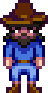

Viejo marinero
| Viejo marinero | |
 | |
| Información
| |
| Cumpleaños | N/A |
| Vive en | La playa |
| Dirección | El más allá |
| Familia | N/A |
| Matrimonio | No |
| Mejores regalos | N/A |
El Viejo marinero es un fantasma que aparece en el lado este de la playa. Él vende el Colgante de sirena, un símbolo para el matrimonio. Tienen que haber tres condiciones para que él aparezca:
- El puente en la playa tiene que estar reparado.
- Tiene que ser un día de lluvia.
- Tienes que ir a la playa antes de las 7:00 PM.
Nota: El Viejo marinero nunca aparecerá durante el invierno, a menos que se use un Tótem de lluvia.
Si el jugador(a) tiene una relación con un NPC (aldeano/a) que tiene 10 corazones y el ramo de flores ha sido entregado, podrás comprar el colgante por  5000o. Después de usar el colgante, te dirá: "Me alegro que el colgante te funcionara, muchacho/a". Si el jugador(a) no es elegible para casarse, el dirá: "Tengo un viejo colgante a la venta... Pero algo me dice que aún no te hace falta". También, si el jugador(a) habla con el viejo marinero mientras tengas 10 corazones con un NPC pero no has mejorado la casa de campo, él dirá: "Puedo ver la chispa en tus ojos, muchacho/a. Te has enamorado perdidamente. Pero me temo que, para un matrimonio feliz, necesitas una casa más grande".
5000o. Después de usar el colgante, te dirá: "Me alegro que el colgante te funcionara, muchacho/a". Si el jugador(a) no es elegible para casarse, el dirá: "Tengo un viejo colgante a la venta... Pero algo me dice que aún no te hace falta". También, si el jugador(a) habla con el viejo marinero mientras tengas 10 corazones con un NPC pero no has mejorado la casa de campo, él dirá: "Puedo ver la chispa en tus ojos, muchacho/a. Te has enamorado perdidamente. Pero me temo que, para un matrimonio feliz, necesitas una casa más grande".
Galería


| Aldeanos | |
|---|---|
| Solteros | Alex • Elliott • Harvey • Sam • Sebastian • Shane |
| Solteras | Abigail • Emily • Haley • Leah • Maru • Penny |
| Ciudadanos | Caroline • Clint • Demetrius • Evelyn • George • Gil • Gunther • Gus • Jas • Jodi • Kent • Lewis • Linus • Marlon • Marnie • Morris • Pam • Pierre • Robin • Vincent • Willy |
| Otros | Abuelo • Birdie • Enano • Esbirro • Gobernador • Junimos • Krobus • Leo • Matón • Rasmodius • Sandy • Profesor Caracol • Señor Qi • Viejo marinero |